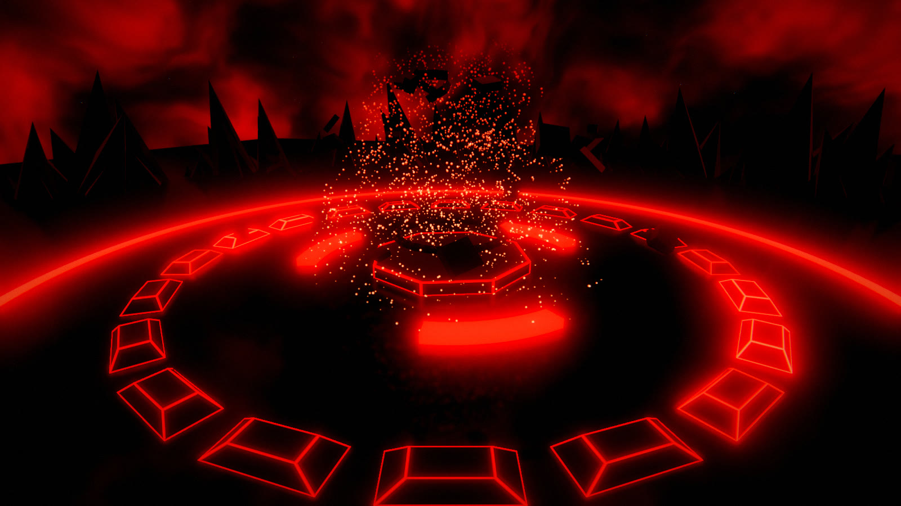
Build seamless, stylised 3D loops the demoscene way: neon, mirrors, particles and retro pixels. No code needed.
EZ2DEMOSCENE is a tool for making short, perfectly looping 3D animations in the style of the demoscene: glowing neon arenas, mirrored golden halls, glossy crystals orbited by debris, raymarched tunnels, kaleidoscopes and synthwave sunsets. The loops are for music visuals, VJ sets, wallpapers, social posts and GIFs.
You never write code or shaders. You pick a starting scene, then change it with sliders, colour pickers and menus. When you like it, you export an MP4, WebM, GIF or a folder of PNG frames.
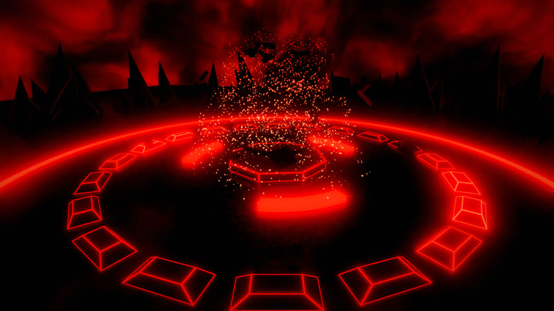
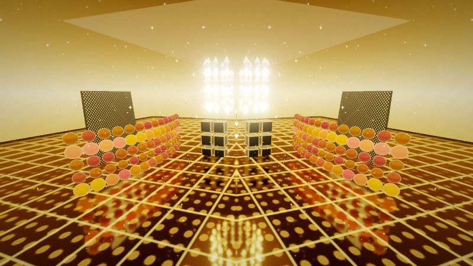
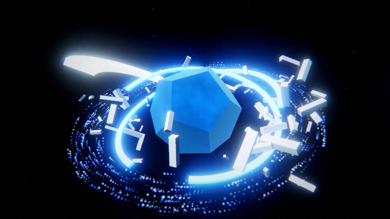
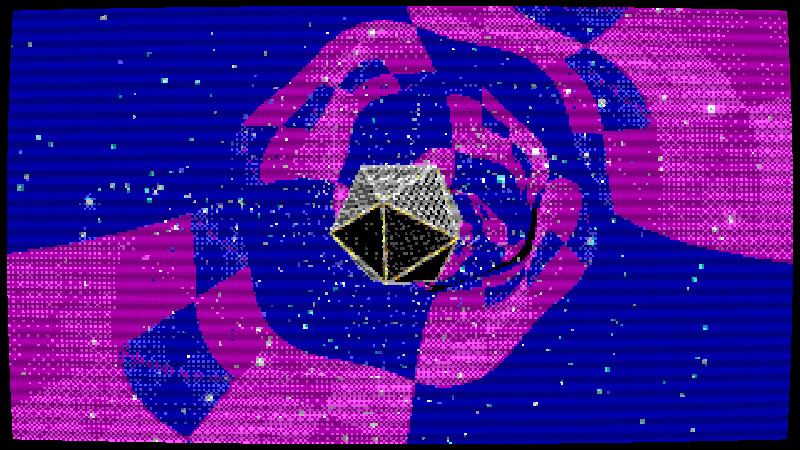
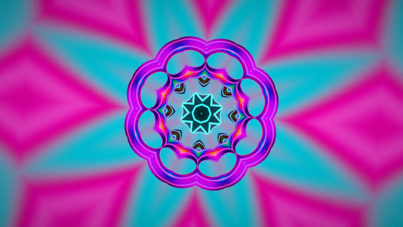
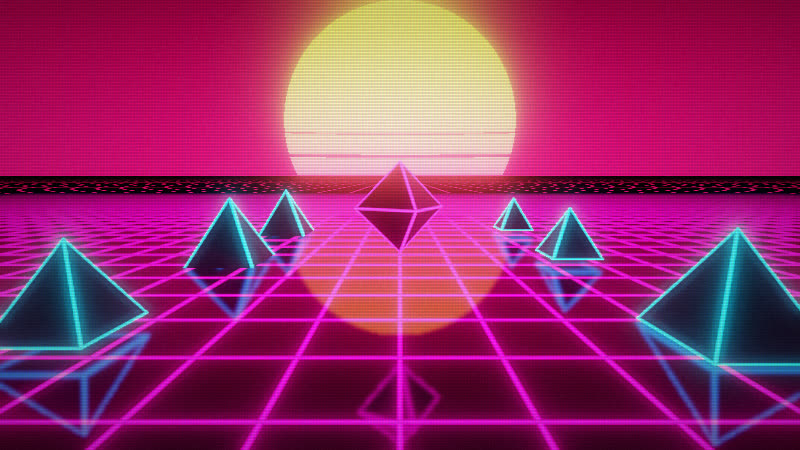
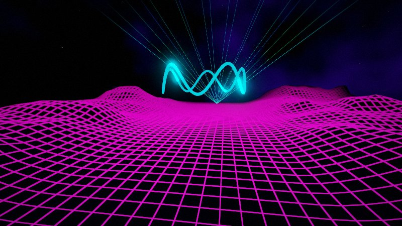
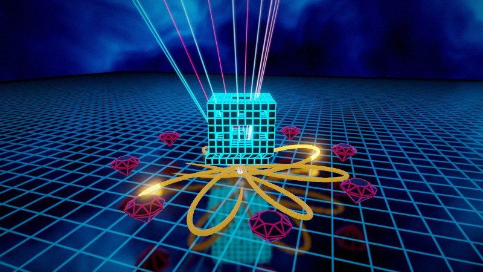
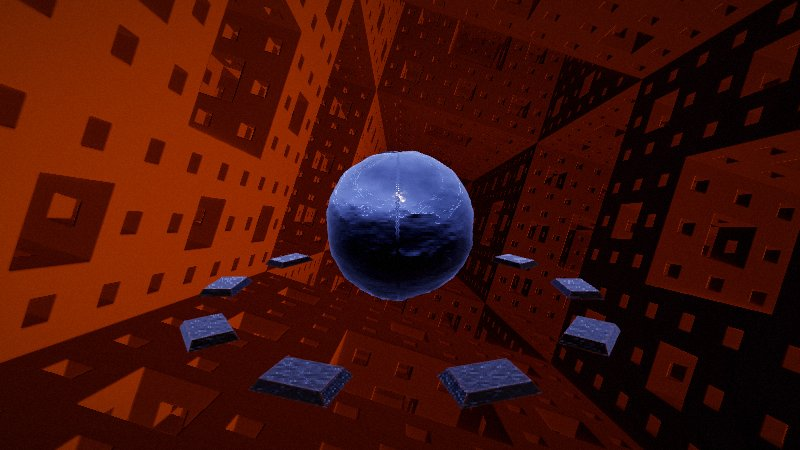
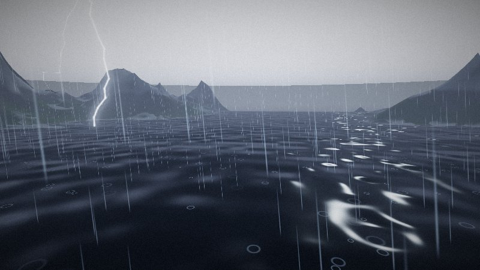
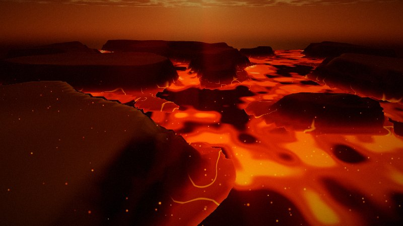
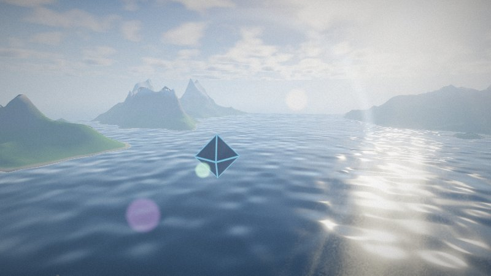
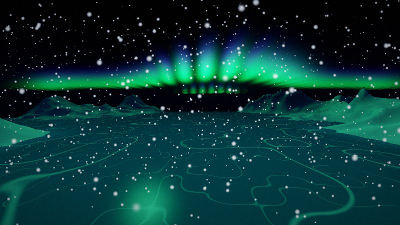
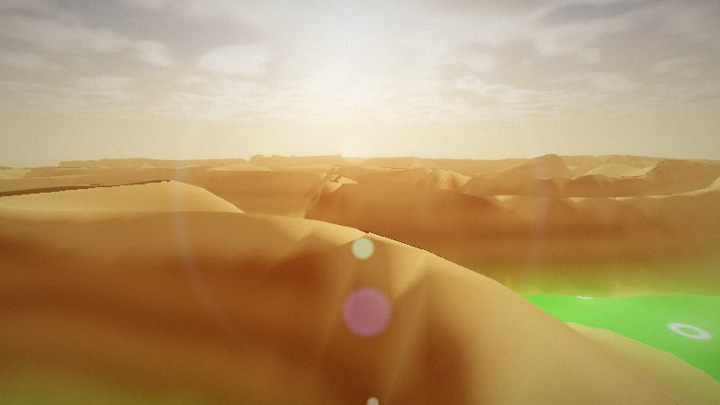
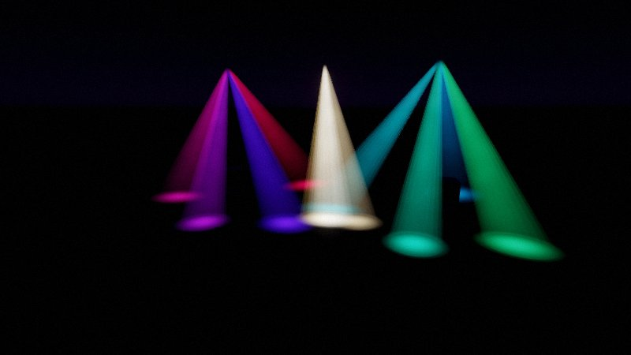
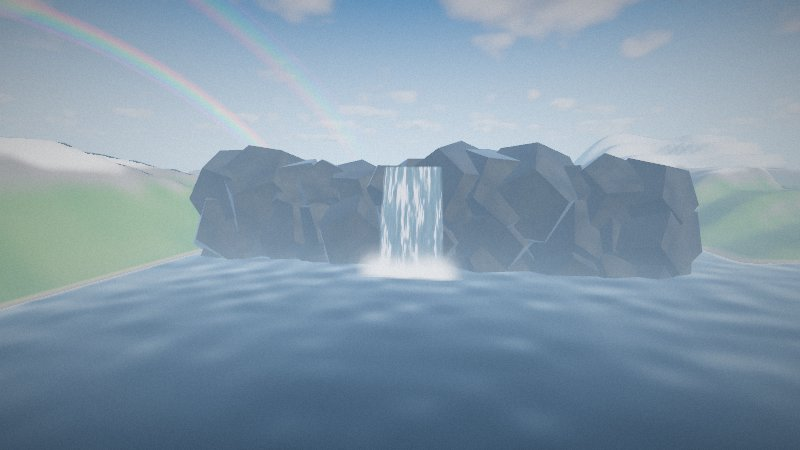
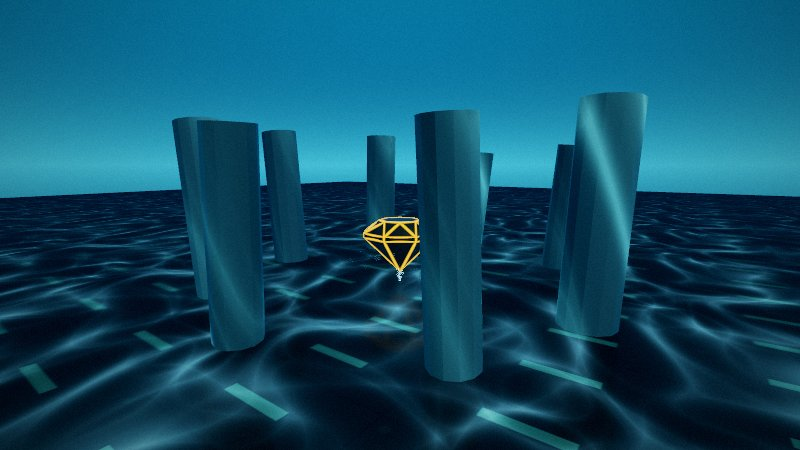
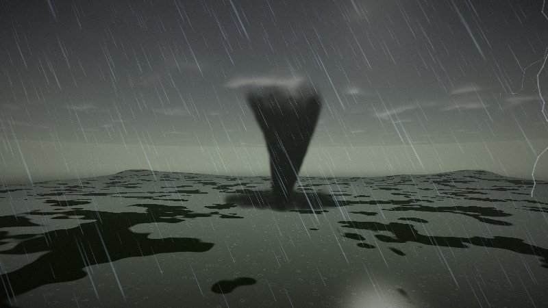
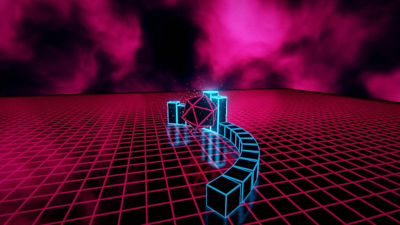
A scene is exactly a whole number of beats long, at a tempo you choose (BPM). Every motion in EZ2DEMOSCENE completes a whole number of times during that loop. That includes spins, orbits, pulses, particles, scrolling textures, drifting clouds and even film grain. So the last frame leads straight back into the first, with no jump.
A scene is a stack of layers drawn together:
On top of the layers sit the camera, the light & fog, and the post effects that give the final look (glow, kaleidoscope, retro palettes, CRT…).
| Item | Details |
|---|---|
| A graphics card | Any GPU with Vulkan, DirectX 12 or Metal support (most GPUs from 2015 onward). A software renderer also works, only slower. |
| Rust 1.95 or newer (source builds only) | Needed to build the app from source. Install it from rustup.rs, or update with
rustup update stable. |
| ffmpeg (optional) | Needed only for MP4, WebM and GIF export. Download it from ffmpeg.org and make sure the
ffmpeg command works in a terminal. PNG sequences need nothing extra. |
| Linux only | sudo apt install libasound2-dev libxkbcommon-dev libwayland-dev |
Ready-made downloads are published on the project's GitHub Releases page for Windows, Linux and macOS. Unzip the
archive and run ez2demoscene (ez2demoscene.exe on Windows). The Windows and Linux downloads include
ffmpeg, so video and GIF export work straight away. On macOS, install it with brew install ffmpeg.
The archive also contains this manual, the presets and the texture pack.
git clone https://github.com/Roganis/EZ2DEMOSCENE cd EZ2DEMOSCENE cargo run --release # opens the editor cargo run --release -- my.ez2.json # opens a saved project
The first build downloads and compiles libraries, so it takes a few minutes. Later starts are instant. The finished
program is target/release/ez2demoscene (ez2demoscene.exe on Windows), and you can copy it anywhere.
When the editor opens you are greeted by the preset gallery.
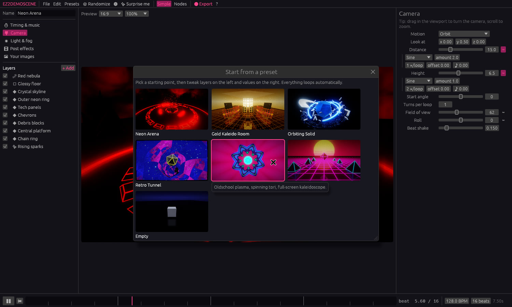
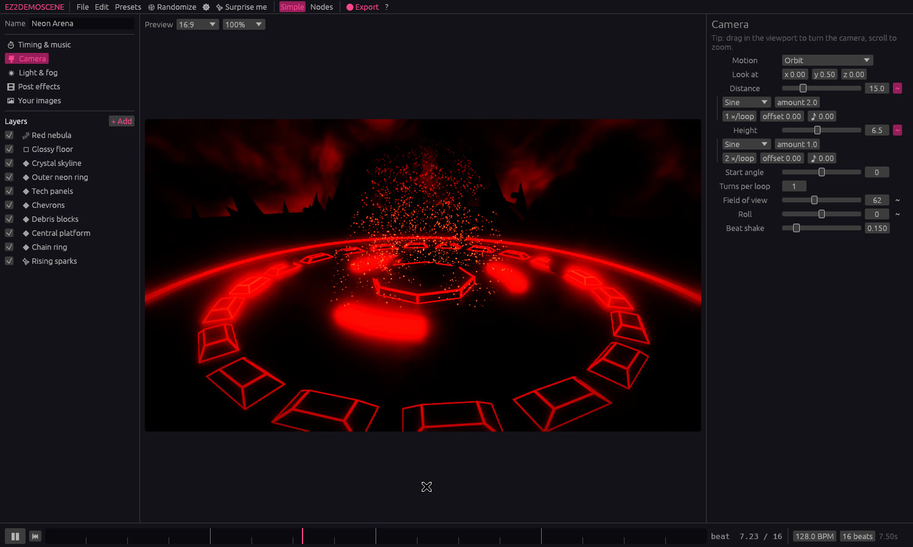
| Area | What it does |
|---|---|
| Top bar | File, Edit, Presets, 🎲 Randomize (with its ⚙ settings), Surprise me, the Simple / Nodes mode switch, ⏺ Export and ? help. |
| Scene panel (left) | The project name; the scene-wide sections (Timing & music, Camera, Light & fog, Post effects, Your images); and the layer list with + Add. |
| Viewport (centre) | A live preview. Drag to turn the camera and scroll to zoom. Above it you can pick the aspect ratio (16:9, 4:3, 1:1, 9:16, 21:9), the preview quality, a live fps readout, the Move / Rotate / Scale tools and the Grid switch (see 5.6). Click an object to select it. Status messages also appear here. |
| Inspector (right) | All the settings of whatever is selected on the left. |
| Timeline (bottom) | Play/pause, back to start, a scrubber with beat ticks (tall ticks mark every 4 beats), the current beat, BPM and loop length. |
The layer list works like the layers in a paint program. Each row has a visibility tick box and the layer's name. Click a row to edit it. Under the list, the buttons ⬆ ⬇ ⧉ 🗑 move, duplicate or delete the selected layer, and right-clicking a layer shows the same options.
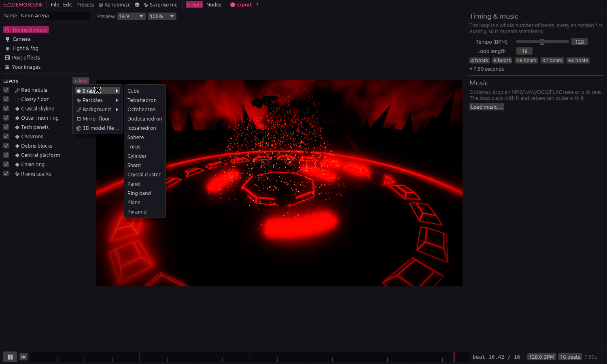
A background fills the whole screen behind the other layers and follows the camera. Every background has three colours (Colour A is usually the darkest), a Motion / loop count, a Brightness and a Detail (pattern scale).
| Style | Description |
|---|---|
| Gradient sky | A soft two-colour sky with a horizon glow and a sun halo in the light direction. |
| Nebula clouds | Swirling fractal clouds with stars. The clouds drift on a closed path so they loop. |
| Starfield | Twinkling stars over faint coloured dust. |
| Raymarched tunnel | The classic demo tunnel flying forward through a winding tube. Pick a Wall texture (the XOR or checker textures are great). |
| Raymarched fractal | A volumetric "Kaliset" fractal space. It looks psychedelic and cosmic, and is heavy on slow GPUs. |
| Oldschool plasma | The 90s sine plasma. |
| Synthwave sun & grid | A striped sun sinking into a scrolling neon grid, with stars. |
| Raymarched sponge flight | Flying through an endless Menger sponge, a lattice of beams or a field of cubes. Heavy on phones: lower Quality if it stutters. |
| Raymarched ring corridor | Flying through glowing rings, squares or triangles that alternate between colours B and C. |
| Volumetric clouds | A real sky: a gradient from colour B (horizon) to A (overhead), a sun in the light direction and raymarched 3D clouds lit by it, glowing at the edges when you look towards the sun. Colour C tints the shadowed sides. The clouds drift with Motion / loop. Pair it with God rays for sunbeams. Heavy on phones. |
| Aurora night sky | Stars and rippling northern-lights curtains that fade from colour B at the bottom to colour C at the top. Colour A is the night sky. |
Resolution renders a background at half or quarter resolution and upscales it. For volumetric clouds and the raymarched styles this is 4× or 16× less work and hardly visible; new clouds, fractal and sponge backgrounds start at half.
The four raymarched backgrounds (tunnel, fractal, sponge, rings) get an extra Raymarching section. Only the settings that matter for the chosen style are shown, and all of them except Variant, Wall pattern, Roll and Quality can be animated with ~.
| Setting | Tunnel | Fractal | Sponge | Rings |
|---|---|---|---|---|
| Variant | Round, Square, Hexagon, Triangle, Flower | Kaliset, Crystal, Nebula | Menger sponge, Beam lattice, Cube field | Rings, Squares, Triangles |
| Size | Radius | Zoom | Cell size | Ring size |
| Twist | Twists the walls along the flight | n/a | Twists the space | Turns each ring a little more |
| Warp | Wall wobble | Fold (changes the whole look) | n/a | Thickness |
| Bend | How much the path winds | Drift | Path sway | Path sway |
| Glow | Light rings sliding past | Brightness | Edge glow | Glow |
| Fog × | Depth fog (0 = none). | |||
| Roll / loop | Whole turns of the view per loop. | |||
| Quality | Raymarch steps (fractal: iterations). 0 uses the default; lower it for phones. | |||
The tunnel also has a Wall pattern (XOR, Checker, Rings, Stripes) used when there is no wall texture.
The two skies share the same section, with their own meanings:
| Setting | Volumetric clouds | Aurora night sky |
|---|---|---|
| Variant | Fluffy, Overcast, Storm (dark and heavy) | Curtains, Rings (around the zenith), Spiral |
| Size | Cloud scale | Height of the curtains |
| Twist | n/a | Sway: how much the curtains swing over the loop |
| Warp | Coverage: how much of the sky is cloudy | Ripples: the fine vertical rays |
| Bend | Thickness of the cloud layer | n/a |
| Glow | Sun glow around the sun and through the clouds | Brightness |
| Fog × | Haze: how much distant clouds melt into the horizon | n/a |
| Quality | Raymarch steps (default 28) | n/a |
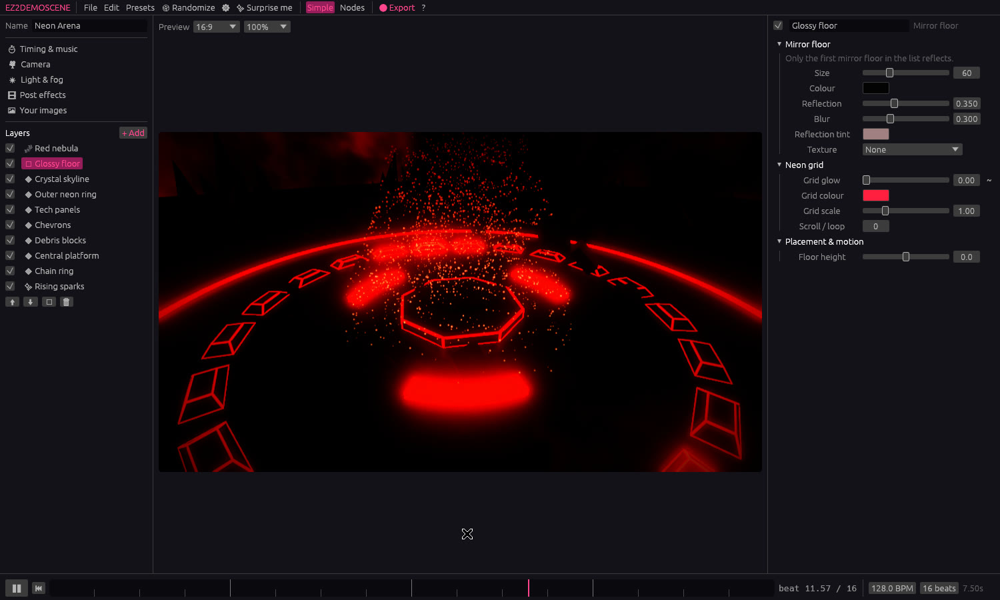
A large reflective ground plane. The scene is really reflected in it, including particles and the sky.
led_grid
texture makes an LED dance floor.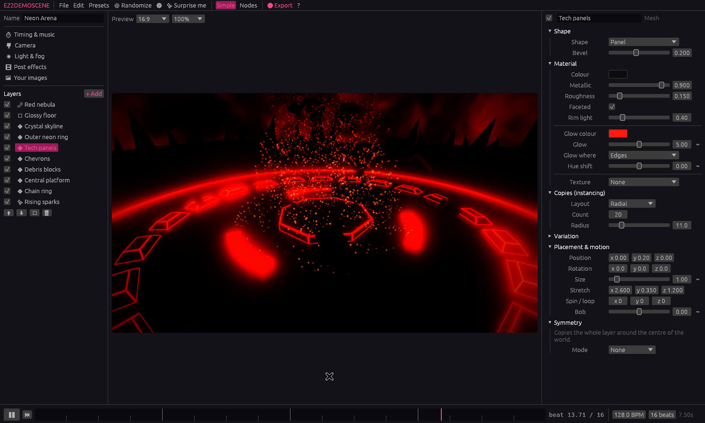
In Shape choose one of 25 built-in shapes, or a 3D file:
| Shape | Good for |
|---|---|
| Cube, Tetrahedron, Octahedron, Dodecahedron, Icosahedron | Classic demo solids. Try them with Faceted on and Glow where: Edges. |
| Sphere (Detail 0–5) | Orbs and bubbles. Detail 0 gives a faceted low-poly ball. |
| Torus | Rings and chain links (Thickness, Segments). |
| Cylinder (Sides) | Platforms and pillars. Eight sides makes an octagonal stage. |
| Shard, Crystal cluster | Sharp spikes and crystal mountains. Seed gives a different random shape. |
| Panel (Bevel) | Sci-fi plates, light panels, screens. |
| Ring band (Arc, Width, Height) | Neon rings and arcs. Set Arc below 360° for partial arcs and chevrons. |
| Plane, Pyramid, Cone | Simple building blocks. |
| Capsule (Length), Rounded cube (Roundness) | Soft, toy-like objects and pills. |
| Torus knot (Loops, Twists), Spring (Turns), Möbius strip | Twisty tubes and bands. Knots with more loops and twists get more intricate. |
| Star (Points, Inner radius), Gear (Teeth), Heart | Flat extruded logos and badges (Depth sets the thickness). |
| Gem (Facets) | A brilliant-cut diamond. Lovely with Glow where: Edges. |
| Menger sponge (Level 0–3) | The classic fractal cube. Level 3 has 8,000 cubes, so use it sparingly. |
| 3D model file | Your own .gltf, .glb or .obj. It is centred and scaled to fit automatically, and
uses the layer's material. |
One layer can show many copies of its shape. Pick a Layout:
| Layout | Settings | Example |
|---|---|---|
| Single | n/a | One hero object. |
| Grid | Count x/y/z, Spacing | Speaker stacks, cube cities. |
| Radial | Count, Radius. Copies face outward. | Panels around an arena, crystal skyline. |
| Scatter | Count, Radius, Only surface, Seed | Floating debris, asteroid shells. |
| Orbit swarm | Count, Radius, Spread, Orbits / loop, Seed | Debris orbiting a planet. |
| Wall | Columns, Rows, Spacing, Curve | Orb walls, LED walls. Curve bends the wall into an arc. |
| Spiral | Count, Radius, Height, Turns | Chandeliers, DNA helices. |
| Along a curve | Curve and Frequencies (the ribbon curves), Size, Count, Laps / loop, Face along | Beads riding a neon ribbon (give both the same curve, size and position), trains, conga lines. |
| On a shape's surface | On shape, Shape size, Count, Seed, Stand up, Lift. Copies are spread evenly by area. | Spikes on a crystal, moss on rocks. Set Shape size to the other layer's Size and put both layers in the same place. |
| On a terrain | Terrain (a Terrain layer), Count, Seed, Follow the slope, Lift | Trees, crystals, lamps and ruins standing on the landscape. They ride along as it scrolls, follow its placement and shrink away at its edges where it wraps; on water or lava they float. |
Variation (appears when there are copies) adds life:
Colours across copies (also when there are copies) spreads 2–4 colours over them: Gradient blends smoothly (back to the first colour at the end), Steps gives each copy one colour in turn. Travel / loop makes the colours run along the copies; Colour the glow tints the glow too.
Bends the shape itself, on every copy. All values have ~, so they can move with the beat.
| Setting | Meaning |
|---|---|
| Twist | Turns of twist from the bottom of the shape to its top. |
| Bend | Curves the shape into an arc (degrees from bottom to top). |
| Taper | Top wider (+) or narrower (−) than the bottom. |
| Wobble | Bumps flowing over the surface; Bump size and Flow / loop tune them. Simple shapes need Subdivide (in Relief) for smooth bends and bumps. |
| Explode | Faces fly apart, clearest with flat shading. Try ~ → Exp fade out, once per beat. |
| Setting | Meaning |
|---|---|
| Position, Rotation | Where the layer sits and how it is turned (degrees). |
| Size | The size of the object, or of each copy. It does not change the distances between copies. |
| Stretch | Stretch per axis (make a cube into a slab or a pillar). |
| Spin / loop | Whole turns per loop around x, y and z. Negative numbers spin the other way. |
| Bob | Up/down offset. Animate it with ~ to make objects float. |
Symmetry copies the whole layer around the centre of the world:
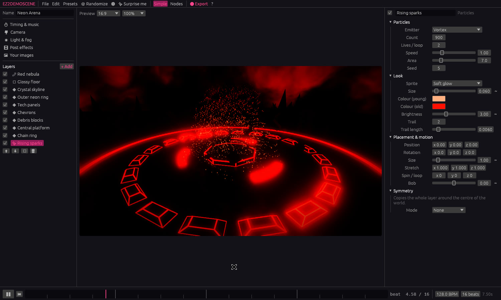
| Emitter | Motion |
|---|---|
| Burst | Explodes outward from the centre. |
| Sphere drift | Floats gently inside a sphere. |
| Ring orbit | Circles in a flat ring (Speed = whole orbits per loop). |
| Fountain | Shoots up and falls back. |
| Warp stars | Streams towards the viewer (hyperspace). Add a Trail for streaks. |
| Vortex | Spirals upwards like embers. |
| Snow / glitter | Falls slowly and sparkles. |
| Tornado | Spirals up a swaying funnel that widens with height, with debris circling its foot. Use it with Smoke for a dark twister, or bright blue for a water spout. |
Smoke makes particles cover what is behind them instead of adding light, so they can be dark (smoke, dust, a tornado). Brightness then becomes Opacity.
Count is the number of particles. Lives / loop is how many times each particle is reborn in one loop, so higher means faster. Area is the size of the emitter. The look is controlled by Sprite (soft glow, pixel square, star, ring), Size, two colours (young → old), Brightness and Trail (ghost copies behind each particle).
An endless landscape that rushes towards the camera, in the retro vector style. Add it with + Add → 🗻 Terrain.
| Setting | Meaning |
|---|---|
| Style | Wireframe (glowing grid lines only; things behind show through), Solid (lit ground) or Solid + lines. |
| Height, Hills, Roughness | How tall the mountains are, how many hills fit across the terrain, and how bumpy they are. |
| Valley | Flattens a road down the middle (0 = none), the classic synthwave look. |
| Scroll / loop | How many times the landscape scrolls past per loop. It repeats exactly, so the loop stays seamless. 0 stands still. |
| Line colour, Line glow, Ground colour | The look. Animate Line glow with a Pulse for beat flashes. |
| Texture, Tiles, Texture on lines, Chunky pixels | Maps a texture onto the ground (and optionally the grid lines). It moves with the landscape; Tiles is how many times it repeats across the terrain, a whole number so the loop stays seamless. |
| Size, Grid cells | Its extent and resolution. More cells is smoother but slower. Grid lines sit on every cell. |
| Level of detail | Full resolution near the camera, gradually coarser further away, with no visible steps: a quarter of the triangles. Raise Grid cells (up to 512) or Size for sharper or bigger landscapes at the same cost. Distant ridges get slightly simpler. |
| Shape | Hills (rolling), Ridged mountains (sharp crests), Mesas (flat terraces with cliffs), Sand dunes (gentle on one side, steep on the other), Canyons (a plateau cut by winding gorges) and Craters. |
| Biome | Colours solid ground by height and steepness instead of one Ground colour: Alpine (grass, rock, snowy peaks, sandy shores), Desert (sand and banded red cliffs), Volcanic (black basalt with glowing cracks), Arctic (snow and blue ice), Alien (purple moss, teal crystal, glowing tips). |
A Liquid fills everything below its Level with a flat surface. The level is a fraction of the mountain height; animate it for tides or rising lava. Liquids also show up on wireframe terrain.
| Liquid | Look | Shine / Glow, Ripples / Crust… |
|---|---|---|
| Water | Reflects the sky with a sun glint, is lighter in the shallows and has foam and wet sand at the shore. | Shine, Ripples |
| Lava | Glowing rivers under a dark, cracked crust that drifts and churns. It lights up the nearby rocks. | Glow, Crust |
| Toxic goo | Glowing green slime with popping bubbles. | Glow, Bubbles |
| Ice | A frozen, cracked, shiny surface that stays still. | Shine, Cracks |
Current / loop makes the surface drift along the terrain a whole number of times per loop; the ripples and crust also turn gently once per bar. Both loop exactly.
Club-style beams shooting from the layer's position along its up axis. Turn the layer with Rotation to aim them, and use Mirror X symmetry for a pair of laser rigs.
| Setting | Meaning |
|---|---|
| Pattern | Fan (a flat fan that sweeps side to side), Rotating cone or Scatter (random directions that wobble). |
| Beams, Spread, Length, Width | How many beams, how wide the fan or cone opens (degrees), and their size. |
| Colour (first/last) | The beams blend from the first colour to the last. |
| Sweep, Sweeps / loop | How far the beams swing, and how often per loop (for the cone, also how fast it turns). |
| Beat strobe | Makes the beams flash on every beat and fade until the next one. |
| Style | Laser beams or Spotlight cones: wide, hazy cones of light, brightest where you look through the most haze. Set their Cone angle, and tick Light pools for bright spots where the cones hit the ground (height 0). Point the layer down (Rotation x 180) to hang the lamps from a ceiling. Add some Mist for a club look. |
A glowing tube along a closed curve, with pulses of light running along it. Choose a Curve (Lissajous, Knot, Figure eight, Wavy ring, Rose) and its wave counts, then set Pulses, Laps / loop (negative runs backwards), Pulse length and Pulse glow. Ribbons reflect in mirror floors and can take symmetry.
+ Add → ☔ Weather fills a box around the camera with rain, snow, embers, sand or fireflies. The box follows the camera, so the weather is everywhere you look. Its Ground height is where rain splashes and embers start.
| Setting | Meaning |
|---|---|
| Kind | Rain (streaks and splash rings), Snow (swaying flakes), Rising embers (flickering sparks), Sandstorm (dust blown along the wind), Fireflies (wandering, blinking lights) or None (lightning only). |
| Amount, Size, Colour, Brightness | How many drops and how they look. Rain also has Streak length and Splashes. |
| Falls / loop | How many times each drop falls per loop: higher is faster. It is a whole number, so the weather loops. |
| Wind, Wind direction | Slants the rain and snow. Animate Wind with a Sine for gusts. |
| Area, Height | The size of the box around the camera. |
| Wet ground / Snow cover | Rain makes every surface darker and glossier, with puddles on flat ground that mirror the sky and ripple with rain rings. Snow settles on everything facing up. A snow cover can't really build up over a loop (it would have to jump back at the end), but you can animate it, for example with a Swell so it builds up and melts away. |
| Lightning | Jagged bolts that strike in front of the camera and a flash that lights up the whole scene, clouds included. Chances / loop and Chance decide how often; each strike flickers two or three times. |
+ Add → 🌊 Waterfall adds a curtain of water, lava or toxic goo that pours from the layer's position downwards and arcs out along its Z axis, with streaks running down it and foam, spray or smoke at its foot. Place it on the edge of a cliff: a terrain mesa, a shape or a wall of boulders (see the Rainbow Falls preset).
| Setting | Meaning |
|---|---|
| Width, Height, Arc | The size of the curtain and how far it arcs out from the edge. |
| Flow / loop | How many times the streaks run down per loop (a whole number, so it loops). |
| Brightness / Glow | Water brightness, or the glow of lava and goo. |
| Foam & mist / Smoke | Puffs at the foot (0 = none). |
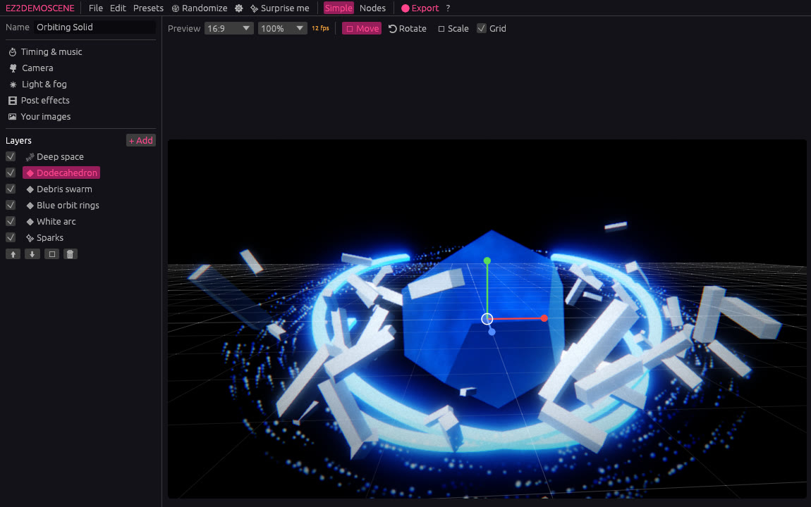
| Setting | Effect |
|---|---|
| Colour | The base colour. |
| Metallic | 0 looks like plastic or paint. 1 looks like metal, where reflections take on the colour (gold, chrome, copper). |
| Roughness | 0 is a glossy mirror-like finish, 1 is matte. The glossy black look of Neon Arena is black + metallic 0.9 + roughness 0.15. |
| Faceted | Flat-shaded, low-poly look. Every face catches light separately. |
| Rim light | A glow along the silhouette that separates objects from dark backgrounds. |
Glow colour and Glow (strength) make a surface emit light. Bright glow feeds the bloom post effect and produces the neon halo. Glow where decides which part glows:
| Glow where | Result |
|---|---|
| Full | The whole surface glows (neon tubes, light panels). |
| Edges | Only the outlines of each face glow, for a Tron / wireframe-neon look. Works on the solids, panels, cylinders, shards and pyramids. |
| Stripes | Glowing horizontal stripes. |
| Texture | Bright parts of the texture glow (LED grids, circuits, tech-panel slits). |
Hue shift rotates all the colours of the layer. Animate it with a Saw wave for rainbow cycling.
The Relief section of a shape layer makes its surface uneven. It uses the material's Tiling and Scroll, and the colour texture unless you pick a separate Relief texture.
| Setting | Result |
|---|---|
| Mode: Bump | The texture's brightness is height: bright parts look raised, dark parts sunken (mortar between bricks, rivets, grid lines). Only the lighting changes, so it's cheap. |
| Mode: Normal map | The texture is a normal map (the purple-blue images from 3D tools and texture sites). Import one as an image and pick it as the relief texture. |
| Relief | Strength of the bump or normal map (animatable). |
| Displacement | Really moves the surface outwards by the texture brightness (negative pushes inwards). Animate it for pulsing, breathing shapes. |
| Subdivide | Adds geometry detail (each level splits every triangle in four), so displacement can show fine patterns. |
The Glitch section of a shape layer corrupts its geometry, like a broken signal. Set an Amount and a Style:
| Style | Result |
|---|---|
| Jitter | The corners shake to random positions; the shape crumples without tearing. |
| Slices (VHS) | Horizontal bands of the object jump sideways. |
| Shatter | The faces fly apart along their directions. |
Changes / loop is how many new random patterns appear per loop, and Chance is how many of those moments actually glitch (1 = all the time, 0.3 = short bursts). Like everything else, the glitch pattern repeats exactly every loop. Animate Amount with a Pulse for hits on the beat.
Pick a Texture from the built-in retro pack or from your own images. Tiling repeats it, Scroll / loop slides it by whole tiles per loop, and Chunky pixels keeps the pixels sharp instead of smoothing them.
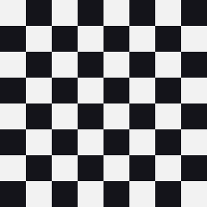
checker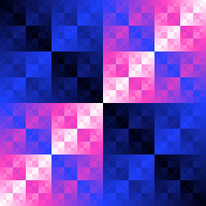
xor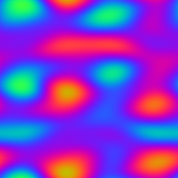
plasma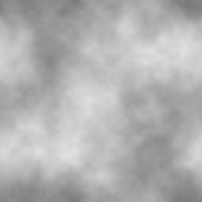
noise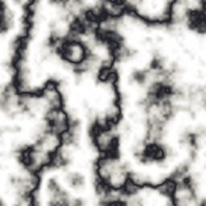
marble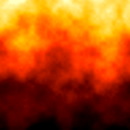
fire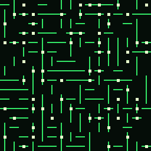
circuit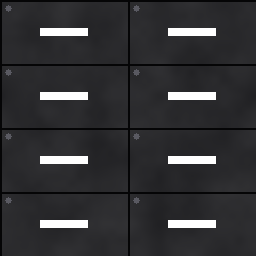
tech_panel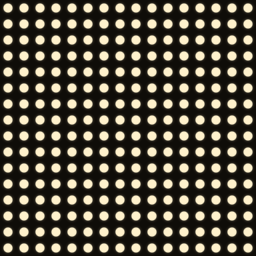
led_grid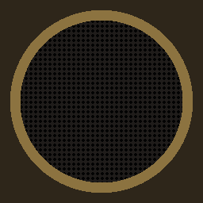
speaker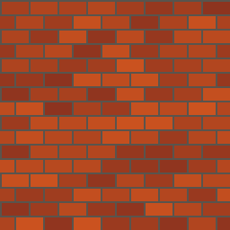
brick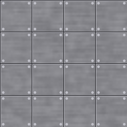
metal_plate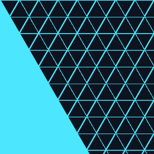
hex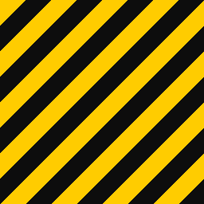
stripes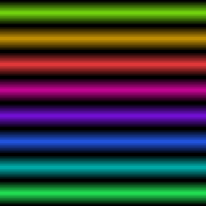
copper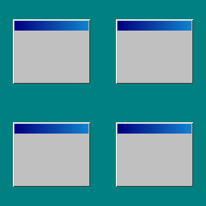
win9x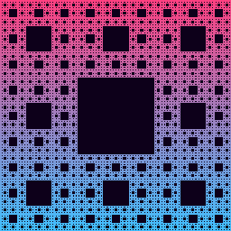
sierpinski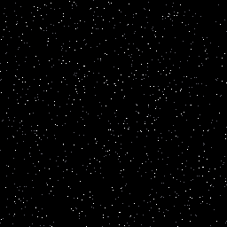
stars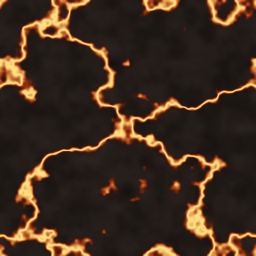
lava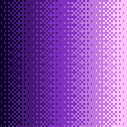
dither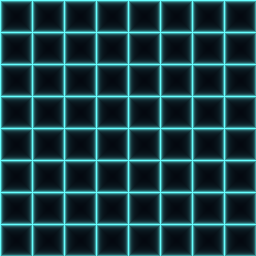
tron_grid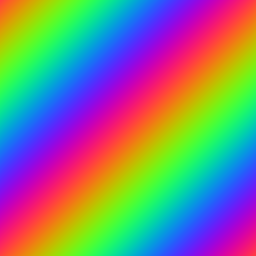
rainbow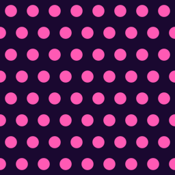
polkaImport images (PNG, JPG, BMP, GIF, TGA) in any of these ways: from a texture menu (Import image…), from File → Import image…, or by dragging them onto the window. A dropped image is applied to the selected shape. All your images are listed under Your images, where you can tick Retro-ize. This shrinks the image to Max size pixels and remaps it to a classic Palette with Dithering, turning any photo into a 90s texture.
Every value with a ~ button next to it can move over time. The button turns pink when the value is animated. Click it to open the animation panel:
| Control | Meaning |
|---|---|
| Wave | The shape of the movement, in three groups (see below). Hover a shape in the menu for a description. |
| amount | How far the value moves from the slider value. 0 means not animated. Picking a shape or a rhythm on a still value gives it a starting amount so you see something straight away. |
| ♩ | Rhythm menu: twice per beat, every beat, every 2 beats, every bar, every 2 or 4 bars or once per loop. It sets ×/loop for you from the loop length. |
| ×/loop | Whole cycles per loop. The number of beats in the loop hits every beat. Negative numbers run backwards. |
| offset | Shifts the timing (0–1 of a cycle), to stagger several animations. |
| ♪ | Adds the music's loudness (see chapter 10). |
Below the controls, a small graph shows the value over the whole loop, with beat ticks and a dot at the current moment.
| Group | Shapes | Use them for |
|---|---|---|
| LFO | Sine, Triangle, Saw up, Saw down, Square | Smooth or hard back-and-forth movement around the slider value. |
| Beat fades | Pulse (hit), Exp fade in, Exp fade out, Linear fade in, Linear fade out, Swell in & out | Envelopes that run from 0 to the full amount (or back) once per cycle. Set ♩ → every beat for hits that decay (Exp fade out), build-ups that drop on the beat (Exp fade in), or breathing swells. |
| Random | Sample & hold, Smooth random, Drunken walk | A new random value each cycle (held, or gliding smoothly), or a random walk that wanders and always finds its way back by the end of the loop. |
Almost every number can be animated this way, including post effects (bloom threshold, pixel size, dither, CRT scanlines and curvature, contrast, saturation, vignette, grain, beat flash, kaleidoscope angle), materials (metallic, roughness, rim light, tiling), light, camera swing and shake, particle speed and area, mirror reflectivity and blur, laser spread, length, width and sweep, terrain roughness and valley, and ribbon pulses.
Placement & motion → Shake jolts a layer in a random direction. Shake distance and Shake turn set how far, and New direction how many times per loop a new random direction is picked. Give the distance a fade for a hit that settles: the ⚡ Beat jolt button does exactly that (Exp fade out, every beat). The Jitter node can drive the same shake for everything connected to it (chapter 12).
Every layer has a Blink / strobe section that makes the whole layer appear and disappear, or flash:
| Mode | What it does |
|---|---|
| Blink | On and off in a regular rhythm. On time is the fraction of each blink it stays visible. |
| Random blink | On and off at random moments. Chance on sets how often it is visible. |
| Flash | Stays visible but its glow flashes and fades. Dim level is the brightness between flashes. |
Times / loop sets the rhythm (16 = every beat of a 16-beat loop) and Offset shifts it, so two layers can blink in turn.
| Setting | Meaning |
|---|---|
| Motion | Orbit circles the target Turns per loop times. Pendulum swings back and forth by Swing degrees. Static stays put, though its values can still be animated. |
| Look at | The point the camera aims at. |
| Distance, Height | How far away and how high the camera is. Both are animatable. |
| Start angle | Which side the camera starts from. |
| Field of view | Zoom lens: 20–35 for a telephoto look, 60–90 for wide and dramatic. |
| Roll | Tilts the horizon. Animate it for a dizzy rave feel. |
| Beat shake | A small camera kick on every beat. |
| Effect | What it does |
|---|---|
| Kaleidoscope | Folds the whole picture into mirrored wedges. You can set Segments, Angle, Turns per loop, Zoom (animatable) and Centre. |
| Mirror split | Mirrors one half of the picture onto the other (left → right, top → bottom, or quad). This is instant symmetry. |
| Bloom / glow | Bright things spill light. Intensity sets the strength, Threshold how bright something must be to glow, and Spread how wide the halo is. |
| God rays & lens flare | Shafts of light streaming from the sun (or from the picture centre, for "light at the end of the tunnel"). Bright sky near the light is smeared towards it, so clouds, mountains and shapes in front cast streaks of shadow. Length, Threshold and Tint shape the rays; Lens flare adds ghosts and a streak when you look into the light, and fades when the sun is hidden. |
| Heat haze | The picture shimmers as if seen through rising hot air: above hot, bright things (lava, fire, the sun), near the bottom of the picture (hot ground) or everywhere. Rises / loop sets its speed. |
| Chromatic aberration | An RGB colour split towards the edges, like a cheap lens. Pulse it on the beat. |
| Pixelate | Fat pixels (the size is measured at 1080p, so previews match exports). |
| Retro palette | Reduces the image to a classic computer palette with ordered (Bayer) dithering. |
| CRT monitor | Scanlines, screen curvature and a VHS wobble. |
| Colour grading | Exposure, Contrast, Saturation, Vignette (dark corners), Film grain and Beat flash (a white flash on every beat). |
| Palette | Colours |
|---|---|
| EGA (16) | |
| CGA (4) | |
| Commodore 64 (16) | |
| Game Boy (4) | |
| PICO-8 (16) | |
| Amiga copper (16) | |
| ZX Spectrum (8) | |
| VGA cube (216) | Every colour quantised to 6 levels per channel, a subtle retro banding. |
| Green phosphor (4) |
Tempo (BPM) and Loop length (in beats) set how long the loop is. For example, 128 BPM × 16 beats = 7.5 seconds. The quick buttons set 4, 8, 16, 32 or 64 beats. These values also appear in the timeline.
Because every animation is counted per loop, changing the BPM speeds the whole scene up or slows it down, and it stays in sync.
Use Load music… or drop an MP3, WAV, OGG, FLAC, M4A or AAC file onto the window. The song is analysed once when it loads: loudness, kick, bass, mids, highs and brightness curves; the hits (kicks, snares and claps, hi-hats, any onset, new notes); a 16-band spectrum; the melody's note; and the tempo. The timeline shows the loudness, with kicks as red ticks and snares as yellow ones. The Meters show every source live. The analysis runs in the background (Analysing music… 42% in the viewport bar), so you can keep editing; music-driven settings start reacting when it finishes, and exports wait for it. Changing only the MIDI file or its offset reuses the analysis instead of starting again.
Every ~ panel has a 🎵 row under the rhythm settings. Pick a source and an amount:
| Source | What happens |
|---|---|
| Follow: Loudness, Kick, Bass, Mids, Highs, Brightness | The value rises with that part of the sound. Tick smooth for a calmer curve and use ignore below to react only to the loud parts. |
| Follow: Melody pitch | The melody's note from C (0) to B (11/12). On Hue shift with amount 1, each note gets its own colour. |
| Each kick / snare / hi-hat / hit / new note | Plays a shape (a beat fade, e.g. Exp fade out) of the chosen length in beats on every hit, scaled by how hard it hit. Flashes on the song's real kicks rather than on the metronome. |
A negative amount pulls the value down instead (e.g. the camera distance on each kick, for a punch-in). The curve preview shows the result with the music.
Time warp makes motion (spins, orbits, camera moves, scrolling, clouds, LFOs) run faster while the chosen source is strong, so the scene surges on every kick or on the loud parts. The warped time is rescaled so a full loop still ends exactly where it started, so the loop stays seamless. Beat fades, strobes, blinks and shakes stay on the real beat. A negative amount slows motion down on hits.
Shapes with copies have an Equalizer setting (under Copies → variation): each copy grows upwards and glows with one frequency band, low notes first. 16 copies in a row or an arc make a classic spectrum display (see the Music Reactor preset).
Load MIDI notes… (or drop a .mid file) takes the hits and the melody from a MIDI file instead of guessing them from the audio: drums on channel 10 give exact kicks, snares and hats, other channels give new notes and the melody pitch, with their velocities. MIDI offset lines the notes up with the audio. A MIDI file works without an audio file too.
Live input (microphone / line-in) makes the preview react to what the microphone hears, for VJ sets. Every source works live, and so does time warp. Live input is not repeatable, so exports always use the music file.
Click Nodes in the top bar to build the scene as a graph. Layers become source nodes that flow through modifiers into an Output. Everything connected to Output is rendered.
| Node | What it does |
|---|---|
| Source | One layer. Click edit in inspector to edit it on the right with the usual controls. |
| Symmetry | Replaces the symmetry of every incoming layer. |
| Offset | Moves every incoming layer. |
| Spin | Adds turns per loop. |
| Scale | Multiplies the size. |
| Tint | Rotates hues and scales the glow. |
| Array | Repeats the incoming layers N times, stepping the position and rotation for each copy. |
| Jitter | Moves and turns every incoming layer by a random amount (seed reshuffles). With re-roll at 0 it scatters the layers once; above 0 it becomes a beat-synced shake that picks a new direction that many times per loop. Move and Turn have ~, so fades work here too. |
| Mirror | Adds a mirrored copy of every incoming layer, across the X, Y or Z plane at a chosen position. |
| Strobe | Sets the Blink / strobe of every incoming layer (chapter 7). |
| Colour / material | Sets the glow colour, multiplies the glow, and for shapes can set a texture, a neon wireframe look and a glitch. |
| Deform | Sets the Deform of every incoming shape. |
| Colours across copies | Sets the colours across the copies of every incoming shape. |
| Along a curve | Lays the copies along a curve. Wire a ribbon layer into its second input (ribbon) and they follow that ribbon exactly, wherever it is. |
| On a surface | Scatters the copies over the shape layer wired into surface, following its placement. |
| On a terrain | Stands the copies on the terrain wired into terrain. |
| Drive | Sets one setting of every incoming layer from a signal (see Signals below). |
| Merge | Combines up to 4 streams. |
| Output | Up to 8 inputs. Everything here is drawn. |
Working with the graph: right-click empty space to add nodes, drag from an output dot to an input dot to connect, and right-click a node to Duplicate or Delete it. The toolbar has three controls: render the graph switches between the graph and the plain layer list; Rebuild from layers starts a new graph from your layers; and Bake to layers turns the graph's result into ordinary layers and returns to Simple mode.
Besides layers, wires can carry signals: one number that changes over the loop. Signal pins are green (outputs are squares). A signal node shows a small graph of its value over the whole loop, with the current moment marked in pink. Add them from the right-click menu under Signal.
| Signal node | What it does |
|---|---|
| Wave / music | Any animation: a wave with whole cycles per loop, a fade on every beat, random steps, or a link to the music (follow the kick, bass or melody, or react to hits). It uses the same ~ and 🎵 controls as every other value. |
| Math | A + B, A − B, A × B, A ÷ B, the smaller or larger one, or A > B / A < B (1 or 0). Unconnected inputs use the numbers typed in the node. |
| Remap | Maps one range to another, e.g. −1…1 to 0.7…1.35. stay in range clamps. |
| Quantize | Rounds to steps (4 steps per 1 → 0, 0.25, 0.5…). |
| Smooth | Averages over a few beats around each moment. Great on random steps. Music links have their own smoothing (the 🎵 row), which works better for them. |
| Mix | Blends A to B by T. |
| Sequence | Steps through your list of values, one every N beats, starting over with the loop. glide slides from each value to the next. |
| Hit counter | Counts kicks (or snares, hats, any hit, notes) since the start of the loop: 0, 1, 2… up to count to − 1, then starts again. Through a Remap (0…3 → 0…1) it steps a setting on every kick. |
A Drive node puts a signal to work. Wire layers into its first input and a signal into the second, then pick the
setting from the list: kind.… are the layer's own settings (for a shape, kind.material.emissive is its glow),
transform.… its placement, and .0 .1 .2 are x, y, z (or red, green, blue). Choose how the signal is used:
set to replaces the value, add adds to it (the setting keeps its own animation), and
multiply by scales it. Chain Drive nodes to drive several settings.
Signals are worked out from the loop position and the music at that moment, so graphs always loop seamlessly. The Signal Flow preset shows a stepped glow Sequence and a smoothed random size on the centrepiece. Bake to layers drops the Drive nodes (settings keep their own values).
| Option | Notes |
|---|---|
| Format | MP4 (H.264) works everywhere. WebM (VP9) is for the web. Animated GIF is for chats and forums. PNG sequence writes one PNG per frame into a folder and needs no ffmpeg; it is ideal for video editors and VJ software. |
| Size | Type a size or use Presets: 720p, 1080p, 1440p, 4K, Square, Vertical (phone), GIF small, Retro 4:3. |
| Frame rate | 24, 25, 30, 50 or 60 fps. The dialog shows how many frames one loop needs. |
| Repeat loop | Makes the file longer by repeating the loop. Useful for platforms that don't loop videos. |
| Music | Include the music track (MP4/WebM only). |
| File / Folder | Where to save. Use Browse…. |
Press ⏺ Export. A progress bar shows the frames being rendered, and you can keep working or press Cancel. Export renders every frame at full quality (anti-aliasing and full-resolution effects) even if your preview is set lower.
ffmpeg runs in a terminal or paste the path to the
ffmpeg program into the box in the export dialog and press Check.File → Save still image… saves the current frame as a PNG at the export size.
You can render without opening the window, which is handy for batch jobs:
ez2demoscene --list-presets ez2demoscene --export friend_scene.ez2pack loop.mp4 # packs work too ez2demoscene --render "Neon Arena" still.png --phase 0.25 --size 1920x1080 ez2demoscene --export "Gold Kaleido Room" loop.mp4 --size 1920x1080 --fps 60 --repeats 4 ez2demoscene --export my.ez2.json frames/ # PNG sequence into a folder ez2demoscene --write-presets my_presets/ # presets as editable project files ez2demoscene --write-textures my_textures/ # the retro texture pack as PNGs
--phase is a position in the loop from 0 to 1 (0.5 is the middle).
File → Save (Ctrl+S) writes a .ez2.json project. Models, images and
music stored inside the project's folder (or its sub-folders) are remembered relative to the project. You can move
or copy the whole folder, even to another computer, and everything is still found. Files elsewhere on your disk are remembered
by their full path.
File → Save as pack (.ez2pack)… writes a single file containing the project and copies of every model, image and music file it uses. It's the best way to send a scene to a friend or archive it. Open a pack with File → Open… or by dropping it on the window. It is unpacked into your library folder, and Save then asks where to keep the project. If some files were missing when packing, the status bar lists them.
While you work, unsaved changes are autosaved every 30 seconds. If the program or computer crashes, the next start offers to recover them:
After recovering, save the project somewhere with Ctrl+S. When you quit normally, the autosave is deleted.
File → Save as my preset… adds the current scene to the gallery with a thumbnail of the current frame. Find it under Presets → My presets. Clicking one opens it as a new untitled project, so your preset is never overwritten by accident. The 🗑 delete button removes it.
Built a great particle effect or neon ring? Right-click the layer → Save as template. It then appears in + Add → ⭐ My templates in every project, and also in the node graph's right-click menu. Manage your templates in Presets → My layer templates.
%APPDATA%\ez2demoscene\EZ2DEMOSCENE\data on Windows, ~/.local/share/ez2demoscene on Linux,
and ~/Library/Application Support/org.ez2demoscene.EZ2DEMOSCENE on macOS. Copy it to back everything up.EZ2DEMOSCENE also runs in a web browser, with nothing to install. It's the same editor with the same presets, layers, node
graph and exports. Open https://roganis.github.io/ez2demoscene/ in Chrome, Edge or Firefox on a computer, or in
Chrome on an Android phone or tablet. On Android you can also install the EZ2DEMOSCENE app (APK), which bundles the same
editor and works offline.
| How | Steps |
|---|---|
| Browser | Just open the link. The first visit downloads about 5 MB; after that it loads from the cache and also works offline. |
| Home-screen app (PWA) | In Chrome, open the ⋮ menu → Add to Home screen / Install app. It opens full-screen like a normal app. |
| Android APK | Download app-debug.apk (or the signed release APK) from the project's GitHub Releases page, open it and allow
"install unknown apps" for your browser or file manager when Android asks. |
When the window is narrower than about 820 pixels, as on a phone held upright, the editor switches to a one-panel layout. The top bar holds ☰ (all menus), play/pause, 🎲 (Surprise me) and Export. A compact timeline sits above a tab bar with three tabs:
Turn a tablet sideways (or use a desktop browser) to get the full desktop layout with all panels side by side.
| Gesture | What it does |
|---|---|
| One finger on a gizmo handle | Moves or rotates the selected layer, as with the mouse. Handles are bigger on touch screens. |
| One finger elsewhere | Orbits the camera around the scene. |
| Two-finger pinch | Moves the camera closer or further away. |
| Two-finger twist | Turns the camera around the scene. |
| Two fingers up/down | Raises or lowers the camera. |
| Long press on a layer | Opens its menu (duplicate, delete, save as template…), like a right-click. |
.ez2pack) with the scene and all its files. Open it
again with File → Open…, on the web or in the desktop app. In the Android app, saving and exporting open
Android's Save as dialog: pick a folder (Downloads, Documents, Drive…) and tap Save. From there you can share the file
to a chat with the Files app.| Format | Notes |
|---|---|
| MP4 / WebM video | Encoded by the browser's own video encoder (WebCodecs, hardware-accelerated on most phones). Loops stay frame-exact. MP4 uses H.264 where available, otherwise VP9 or AV1. The web version exports video without the music track; use the desktop app for videos with sound. |
| GIF | Works everywhere; loops forever by itself. Keep it small (e.g. 480×270) for sharing. |
| PNG frames (.zip) | Every frame as a lossless PNG, for editing elsewhere. |
The preview pauses while exporting so the device can concentrate on the frames. Phones are slower than desktop PCs, so start with 720p or less, and keep the tab open until the download starts.
☰ → 🖥 Graphics (the 🖥 button on a computer) shows which backend, GPU and driver the app is using; 📋 Copy copies the details for a bug report. On the web and in the Android app you can also force WebGL2 or WebGPU there. The change applies after ⟳ Restart now. If the chosen backend can't start, the app goes back to Automatic by itself.
led_grid and Grid glow 0.6.speaker, a Grid of 2 × 3 and Symmetry Mirror X. Pulse the glow on the beat.xor and Motion / loop 4.checker, Chunky pixels, Glow Edges, and Spin / loop 2 / 1 / 0.| Action | Shortcut |
|---|---|
| Play / pause | Space |
| Save | Ctrl+S |
| Open | Ctrl+O |
| Export | Ctrl+E |
| Undo / Redo | Ctrl+Z / Ctrl+Shift+Z (or Ctrl+Y) |
| Move / Rotate / Scale tool | W / E / R |
| Ground grid on/off | G |
| Select an object | Click it in the viewport |
| Snap while dragging a handle | Hold Ctrl |
| Turn the camera | Drag in the viewport (not on a handle) |
| Zoom the camera | Mouse wheel over the viewport |
| Scrub time | Click or drag in the timeline |
| Import | Drop project, model, image or music files onto the window |
The small fps number above the viewport shows how smoothly the preview runs. It turns orange below 24 fps. Hover it to see the frame time, triangle and particle counts, whether the mirror floor is drawing the scene a second time, and the five most expensive layers. A ⚠ next to a layer in the list marks a heavy layer. Hover it for details. The usual fixes are fewer copies, less sphere detail, fewer particles or a shorter trail. You can also lower the preview quality, which only affects the preview and never your exports. Volumetric clouds and the raymarched backgrounds are the heaviest layers; their Quality setting trades detail for speed.
| Problem | Solution |
|---|---|
| Playback stutters | Hover the fps readout to find the heaviest layers (see Performance above), or lower the preview quality. The fractal background and big particle counts are the heaviest. Exports are not affected. |
| The computer crashed and I lost my work | Start EZ2DEMOSCENE again and choose Recover (chapter 14). |
| A friend's project can't find its files | Ask them to send a pack (File → Save as pack) instead of the
.ez2.json file. |
| Everything is washed out or one colour | A big glowing object is probably filling the screen. Reduce Glow, raise the Bloom threshold, or check the Size/Stretch of ring and panel layers. |
| A shape is invisible | Check its visibility box, its Size, whether it is below the floor or inside another object, and the fog density. |
| My model shows as a cube | The file couldn't be read. The reason appears in red at the bottom of the inspector. Use Edit → Reload models & images after fixing the file. |
| No sound | No audio output device was found. The music is still used for sync, ♪ modulation and export. |
| Video export fails | Check ffmpeg (chapter 13), or export a PNG sequence instead. |
| The picture corrupts or flickers on a phone or in a browser | Open 🖥 Graphics and switch to the other backend (WebGL2 or WebGPU), then restart (chapter 15). |
| The app doesn't start | Update your graphics drivers. On Linux, install Vulkan drivers (e.g. mesa-vulkan-drivers). |
Projects are saved as readable .ez2.json text files. Imported models, images and music are stored as file paths, so keep
the files inside the project's folder (they're then stored relative to it), or share a pack (chapter 14). The built-in presets are also available as project files in
assets/presets.
| Term | Meaning |
|---|---|
| Beat / BPM | A musical pulse. BPM is beats per minute. |
| Loop / phase | The repeating clip. Phase is a position in it, from 0 (start) to 1 (end, which equals the start). |
| Instancing | Drawing many copies of one shape efficiently. |
| Emission / glow | Light a surface gives off by itself. |
| Bloom | The halo that bright things spill onto their surroundings. |
| Raymarching | A technique that draws shapes defined by maths (tunnels, fractals) instead of polygons. It is a demoscene classic. |
| Dithering | Patterns of pixels that fake more colours than a palette has. |
| Demoscene | A computer art subculture, dating back to the 1980s, that makes real-time audiovisual "demos". |
EZ2DEMOSCENE is free software under the GPL-3.0-or-later licence. The built-in texture pack is CC0.